Steward
分享是一種喜悅、更是一種幸福
手機 - Fujitsu LOOX F-07C - 自製電源底座(小米5000mA行動電源)
由於F-07C的原廠電池容量只有1400mA，切到Windows模式下，大約只能使用40分鐘，這樣的續航時間並不符合司徒的需求，雖然可以使用行動電源充電，不過拉著一條尿袋也是相當不方便，因此，製作電池座的想法立刻在司徒腦中浮現，剛好最近小米出了一款超薄5000mA行動電源，厚度只有1cm，加上價格相當親民，因此最終成為司徒的改機材料，選定電池座後，還需要有固定座，司徒找了一下市面上的手機座，並沒有找到適合的固定座，不過，司徒發現自己還留著一個N900皮套，心想這應該就是司徒需要的固定座，因此，N900手機皮套最終成為固定座材料
N900手機皮套
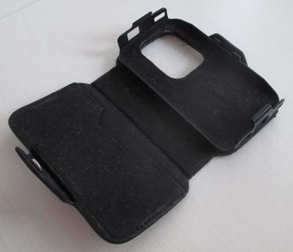
剪裁後的材料
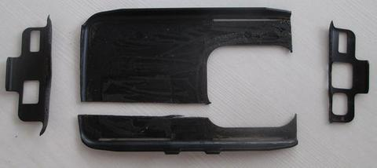
小米5000mA行動電源，厚度只有1cm
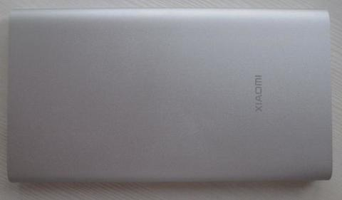
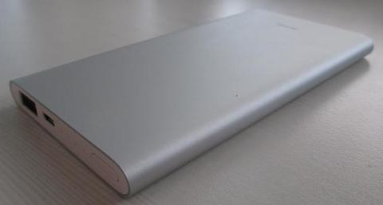
使用3秒膠固定底座並從內部拉出電源線，最終連到iPhone 4接頭
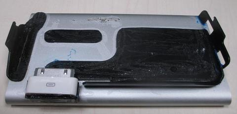
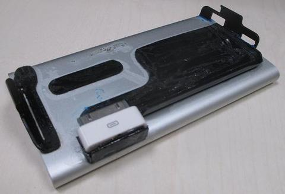
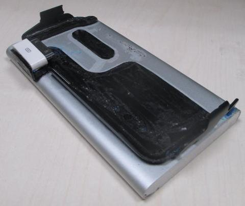
完美連接F-07C
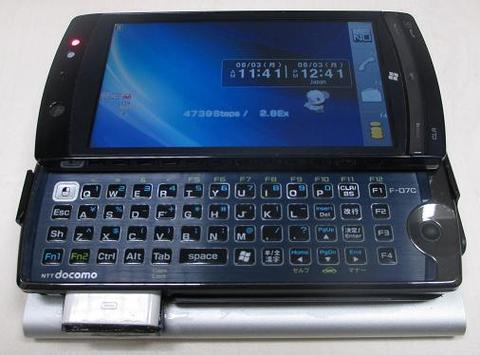
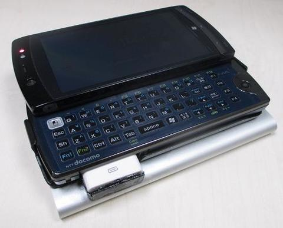
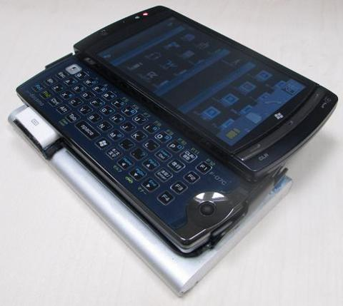
拿在手上還是一樣具有很好的手感
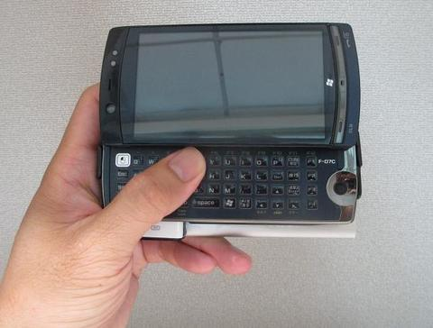
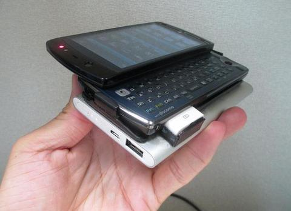
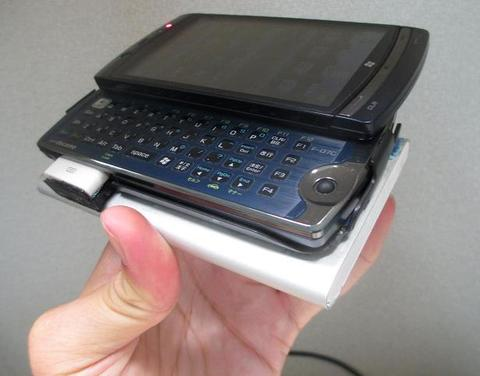
滑蓋也是一樣可以輕鬆蓋起來
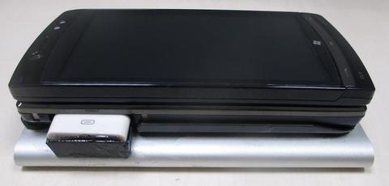
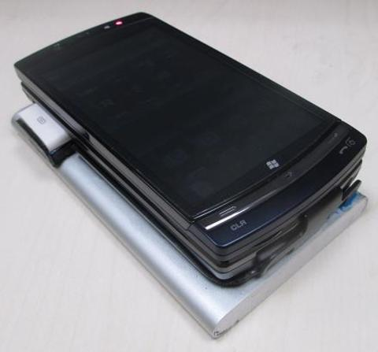
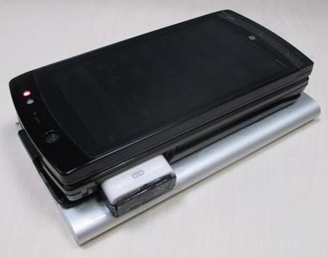
最後司徒測試一下使用時間，發現小米5000mA行動電源可以撐5個小時(Xubuntu + 開啟內建無線網卡)，如果加上原廠1400mA電池的1小時，全部總共可以使用6個小時，這對司徒來說已是相當足夠